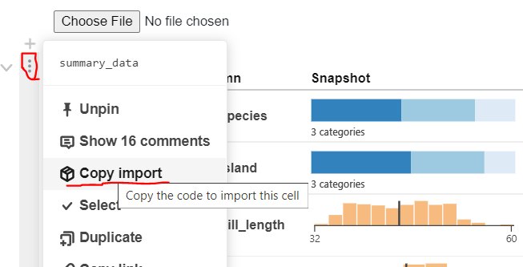

import {viewof data} from "@observablehq/summary-table"
viewof dataObservable Imports in Quarto
Observable Power of Community
Quarto integrates Observable JavaScript cells which means we can leverage the amazing work of others contributed on Observable. I was surprised that none of the ojsexamples I found show how to import from other notebooks to maximize the power of collective genius. See observable imports for more details on the deliberate efforts by Observable to allow easy integration of the work of others.
License
I should note to please check license before importing a notebook. Thanks Sean Lopp for the tweet. In the below example, we are safe with the ISC license.
Example with Summary Table
As an example, we can import the very promising work from Mike Freeman on the Observable team summarizing the penquins data set, but if you want too bring your own data, then we can supply that feature as well. With four lines of ojs code, we get something pretty amazing.
import {viewof summary_data} from "@observablehq/summary-table"
viewof summary_dataHelper For More Complicated Imports
In many cases observable cells have a clear name, but sometimes it is a little less straightforward. For instance, in the example above, instead of a simple one-word cell name, we use viewof summary_data. Fortunately, Observable now provides a helper to grab the name. Hovering over a cell reveals a three vertical dot button to the left. If we click on the three-dot button, then we get a Copy Importoption.
